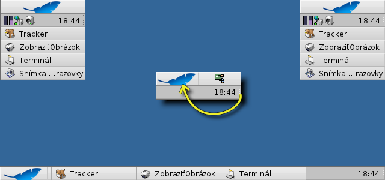
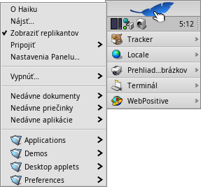
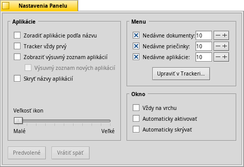
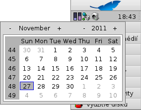
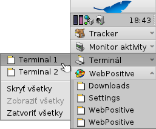

Slovenčina
Slovenčina Català
Català Deutsch
Deutsch English
English Español
Español Français
Français Italiano
Italiano Magyar
Magyar Polski
Polski Português
Português Português (Brazil)
Português (Brazil) Română
Română Suomi
Suomi Svenska
Svenska 中文 ［中文］
中文 ［中文］ Русский
Русский Українська
Українська 日本語
日本語| Obsah |
|
Menu Panelu Oznamovacia oblasť Zoznam bežiacich programov |
Panel
Panel je malý panel, ktorý je štandardne umiestnený v pravom hornom rohu obrazovky. Je to Haiku obdoba panelu úloh vo Windows, s jeho tlačidlom Štart. Obsahuje menu Panelu, odkiaľ môžete spustiť aplikácie a nastavenia, oznamovaciu oblasť s hodinami a ostatnými nástrojmi pod ním a zoznam momentálne bežiacich programov na spodku.
Panel môžete presunúť do akéhokoľvek rohu obrazovky alebo umiestniť ako lištu kdekoľvek pozdĺž horného alebo spodného okraja obrazovky chytením za bodkovanú oblasť na boku oznamovacej oblasti, potiahnutím a následným pustením na novú pozíciu. Môžete ho tiež zložiť do kompaktnejšej verzie, potiahnutím a pustením bodkovanej oblasti na menu Panelu.
 Menu Panelu
Menu Panelu
Keď kliknete na vrch Panelu, otvorí sa vám menu:
O tomto systéme - Zobrazí základné informácie o systéme, licenciách a ľuďoch, ktorí prispeli do projektu Haiku.
Nájsť... - Otvorí dialóg Požiadavky.
Zobraziť replikantov - Zobrazí/skryje malý prvok Replikanta, ktorý môžete použiť na presúvanie, odstránenie alebo na prístup k jeho kontextovému menu.
Pripojiť - Poskytuje rovnaké možnosti ako keď je vyvolané pravým kliknutím na Plochu (pozri Pripájanie Diskov).
Nastavenia Panelu... - Otvorí okno na nastavenie Panelu (pozri nižšie).
Vypnúť - Poskytuje možnosti buď alebo .
Nedávne dokumenty, priečinky, aplikácie - Zobrazí zoznam naposledy otvorených dokumentov, priečinkov a aplikácií (pozri nižšie).
Aplikácie, Demá, Applety Panelu, Nastavenia - Zoznam nainštalovaných aplikácií, dem, apletov a nastavení.
Odkazy na iné programy (alebo akýkoľvek priečinok, požiadavku atď.) môžete pridať tým, že ich dáte do ~/config/settings/deskbar/menu/.
Nastavenia Panelu

Nastavenia Panelu sú rozdelené do troch častí:
Aplikácie
Nasledujúce nastavenia sa netýkajú vašich nainštalovaných aplikácií, ale správania a vzhľadu bežiacich aplikácií.
| Zoradí všetky bežiace aplikácie podľa abecedy. | ||
| Aj keď zoradíte podľa abecedy, Tracker zostane vždy prvý v zozname. | ||
| Poskytne malý ovládací prvok na zobrazenie/skrytie všetkých okien programu priamo pod jeho záznamom v Paneli. | ||
| Novo spustené programy majú ich okná automaticky rozšírené pod ich záznamom v Paneli. | ||
| Odstráni textové popisy bežiacich aplikácií. | ||
| Prispôsobí veľkosť ikony bežiacich aplikácií. |
Menu
While the first couple of menu items of the Deskbar are fixed, you can customized the ones below .
Here you can set the number of recent documents, folders and applications that are shown in their menu in the Deskbar, or if you want to see them at all.
The button opens the folder ~/config/settings/deskbar/menu/. In it you'll find the files and folders that appear in the Deskbar, by default these are , , , and .
You can delete or add entries like links to applications, documents or even queries by simply copying/deleting them to/from this folder.
Programy nainštalované z balíka automaticky vložia položku do Panelu. Ak máte nainštalovaný veľký počet balíkov, Panel môže byť trochu preplnený. Ak uprednostňujete mať plnú kontrolu a vidieť len aplikácie, ktoré ste tam sami pridali (a prípadne rozdelili do podmenu), tu je návod, ako na to:
Vytvorte odkaz priečinka menu v ~/config/settings/deskbar/ a premenujte na menu_entries. Z Terminálu, čo dosiahnete pomocou:
ln -s ~/config/settings/deskbar/menu ~/config/settings/deskbar/menu_entries
Okno
A nakoniec nastavenia okna Panelu.
| Panel vždy zostane nad všetkými ostatnými oknami. | ||
| Panel skočí do popredia ak sa ho dotkne kurzor myši. | ||
| Panel je zredukovaný len na pár pixlov a zobrazí sa len ak sa ich dotkne kurzor myši. |
Oznamovacia oblasť

Okrem iných vecí sa na oznamovacej oblasti nachádzajú aj hodiny. Prejdite na ne kurzorom, aby sa vám zobrazil čas v bublinovej nápovede. Kliknite ľavým tlačidlom, pre zobrazenie kalendára. Kliknite pravým tlačidlom, pre zobrazenie/skrytie hodin, alebo spustenie nastavení Času, aby ste ho nastavili.
Akýkoľvek program môže umiestniť ikonu do oznamovacej oblasti, aby poskytol rozhranie pre používateľa. Napríklad emailový systém zobrazuje odlišný symbol, keď máte neprečítanú poštu a poskytuje kontextové menu napr. na vytvorenie alebo skontrolovanie správ. Správca Procesov je ďalší príklad, ktorý používa jeho ikonu v oznamovacej oblasti, aby poskytol informácie (využitie CPU a pamäte) a aby poskytol kontextové menu.
Zoznam bežiacich programov

You can change to a specific running application by clicking on its entry in the Deskbar and choosing (one of) its windows from the submenu. By right-clicking you can windows or and with them the entire application.
A SHIFT CTRL click on an application hides all its windows, a CTRL click shows them again.
Ak ste aktivovali Vysúvacie zoznamy aplikácii v nastaveniach Panelu, môžete rozbaliť resp. zbaliť zoznam okien priamo pod položkou danej aplikácie.
Pred každým z okien aplikácie je symbol poskytujúci informácie o jeho stave. Jasný symbol znamená, že okno je viditeľné; tmavý, že je minimalizované. Tri čiary pred symbolom znamenajú, že sa nenachádza na aktuálnej pracovnej ploche.